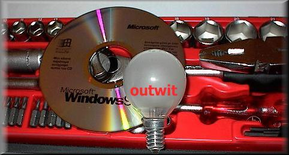

outwit dds

Outwit
Outwit
is a suite of tools based on the Unix tool design
principles allowing the processing of Windows application data with
sophisticated data manipulation pipelines.
The outwit tools offer access to the Windows
clipboard,
the registry,
the event log,
relational databases,
document properties, and
shell links.
You can find a set of native Win32 ports of GNU utilities that you can
use with outwit
here.
The current version of outwit is VERSION.
The following pages do not contain navigation links.
Use your browser's back button to return to this page.
Download (.zip files)
Documentation (HTML and PDF)
- Diomidis Spinellis.
Outwit: Unix tool-based programming meets the Windows world.
In USENIX 2000 Technical Conference Proceedings, pages 149-158,
San Diego, CA, USA, June 2000. Usenix Association.
- winclip - Access the windows clipboard HTML, PDF
- winreg - manipulate the windows registry HTML, PDF
- docprop - read document properties HTML, PDF
- odbc - select data from relational databases HTML, PDF
- readlink - resolve shell shortcuts HTML, PDF
- readlog - access the windows event log HTML, PDF
- Change log
Diomidis Spinellis home page
(C) Copyright 1995-2016 D. Spinellis.
May be freely uploaded by WWW viewers and similar programs.
All other rights reserved.